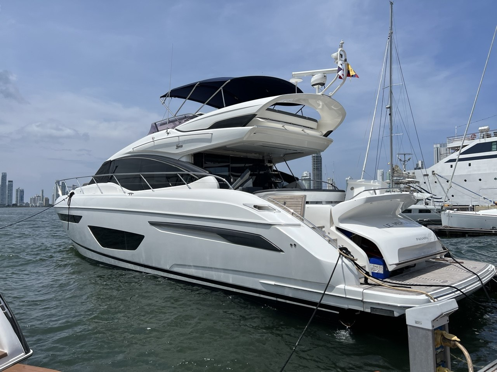
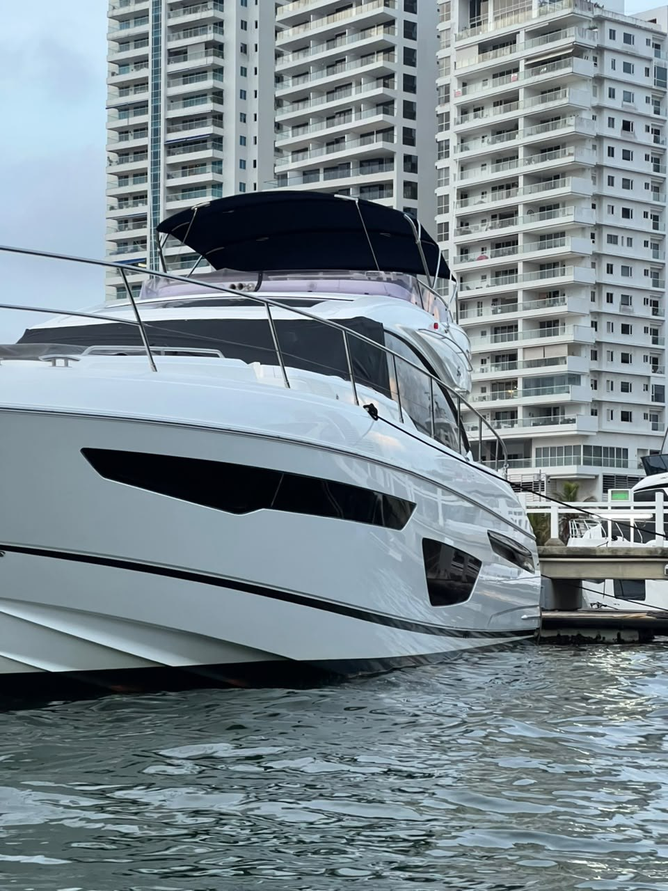
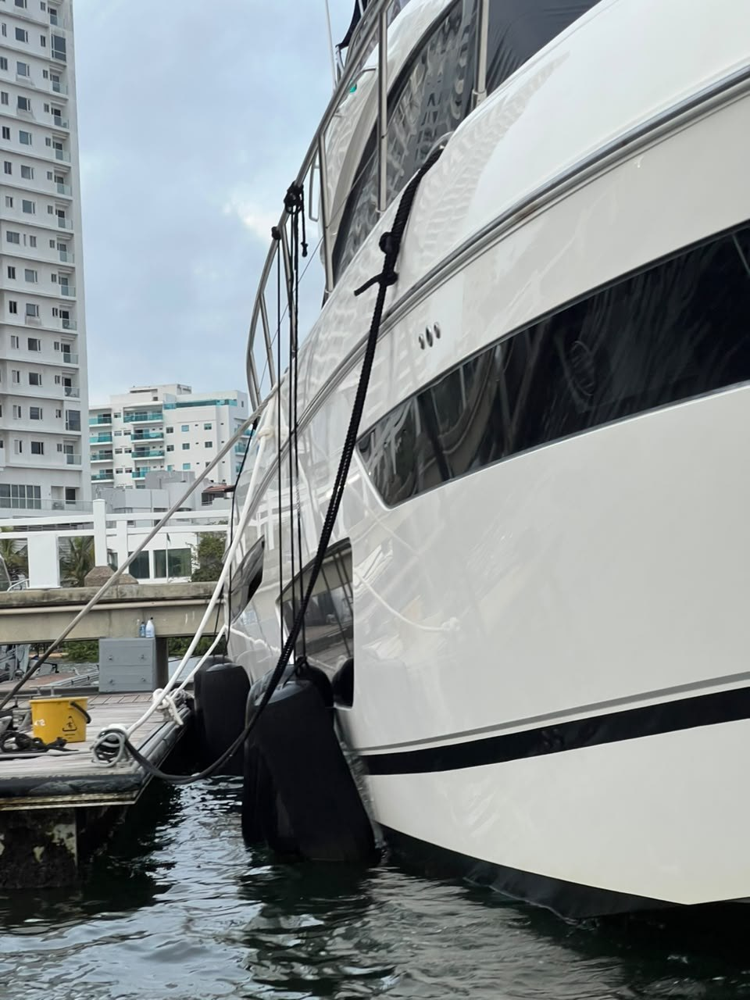
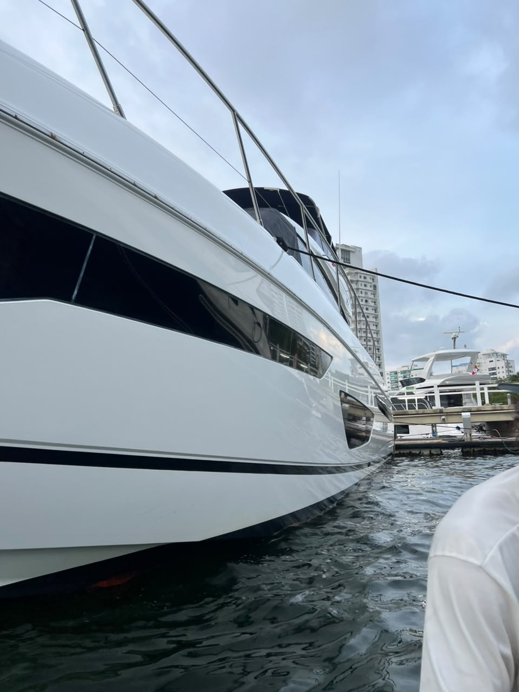
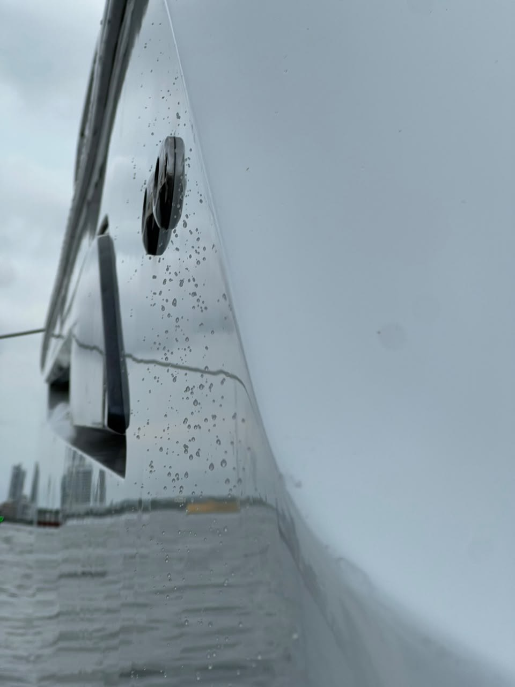

Enjuague inicial
Retire salitre con abundante agua dulce, de arriba hacia abajo. No empiece frotando una superficie seca.
Cuidado post-servicio · Princess 65
Manual personalizado para conservar el brillo limpio y uniforme del gelcoat blanco después del pulido integral y la protección profesional con sistema 3M Marine.

Se corrigieron las superficies exteriores accesibles de gelcoat mediante preparación y descontaminación, corte controlado con 3M Marine Heavy Duty Compound, refinado con 3M Finesse-it / Marine Polish y sellado con 3M Marine Ultra Performance Paste Wax. El alcance comprendió costados, proa, popa, superestructura, pasillos y flybridge accesible.
Esta guía está pensada específicamente para un yate blanco: la prioridad es retirar sal, gotas minerales, escurridos oscuros y hollín antes de que se adhieran, sin desgastar la protección ni volver opaco el gelcoat.
Registro del servicio
Acabado uniforme, reflejo limpio y protección visible sobre el gelcoat blanco del Princess 65.




La sal no debe secarse repetidamente sobre el yate. Un lavado suave y frecuente protege más que una limpieza agresiva y tardía.
Retire salitre con abundante agua dulce, de arriba hacia abajo. No empiece frotando una superficie seca.
Lave con el gelcoat frío. El sol cartagenero seca el shampoo demasiado rápido y favorece manchas minerales.
Diluya según la etiqueta. Use guante de microfibra limpio o cepillo de cerdas muy suaves reservado para el gelcoat.
Uno con la solución y otro con agua limpia para enjuagar el guante. Así evita devolver arena y suciedad a la superficie.
No deje residuos de jabón en molduras, uniones, pasillos ni alrededor de ventanas.
Use toallas de microfibra grandes y limpias. Secar reduce las marcas de agua visibles sobre el blanco brillante.
El blanco disimula micro-rayones, pero hace muy visibles los escurridos, el hollín y las manchas de óxido. Trátelos pronto y de forma localizada.
Primero pruebe shampoo marino. Si persisten, use un removedor marino específico de black streaks sobre la microfibra, nunca un desengrasante doméstico concentrado. Enjuague de inmediato.
Revise popa y zonas cercanas al escape después de cada salida. Retire la película temprano con limpiador marino suave; no permita que se acumule por semanas.
No aplique ácido, cloro ni removedor industrial. Aísle el origen metálico y consulte antes de tratar la mancha para no abrir poros ni alterar el brillo.
Seque pasamanos, molduras horizontales y flybridge. Si una marca no sale con lavado neutro, no la ataque con esponja: solicite evaluación.
Aplique solo sobre superficie lavada, seca y fría, en capa fina. No encere pisos antideslizantes, teca ni zonas de paso donde pueda generar riesgo.
Compound y polish no son productos de lavado. Su uso repetido elimina material; resérvelos para una corrección técnica medida.
Elija productos marinos con etiqueta vigente y pruebe siempre en un punto discreto. No mezcle químicos.
Shampoo pH balanceado para suciedad y salitre, formulado para no retirar la protección de cera existente.
Lavado frecuenteAlternativa concentrada para fibra de vidrio, vidrio, metal, plástico y superficies pintadas; limpia sal sin retirar cera o polish.
Alternativa de lavadoProducto compatible con el sistema aplicado. Para refuerzo periódico, en capa fina y únicamente sobre gelcoat limpio y frío.
Protección principalAlternativa de protección UV y brillo para fibra de vidrio y gelcoat. No la combine en la misma aplicación con otra cera.
Protección alternativaSepare por uso: una para gelcoat, otra para metales y otra para zonas sucias. Lávelas sin suavizante y cámbielas si caen al piso.
Herramienta esencialSon la mejor prevención cotidiana. Un buen enjuague y secado temprano reduce la necesidad de químicos más fuertes.
Después de navegarAjuste la frecuencia si el yate permanece expuesto al sol, contaminación portuaria o agua salpicada durante largos periodos.
| Frecuencia | Acción | Cómo hacerlo |
|---|---|---|
| Después de cada salida | Enjuague de sal y revisión de popa | Agua dulce, atención a hollín y combustible, secado de superficies horizontales. |
| Cada 7–14 días | Lavado completo | Shampoo marino neutro, método de dos baldes, guante suave y secado. |
| Cada mes | Inspección visual | Revise pérdida de repelencia, marcas minerales, escurridos, óxido y zonas con tacto áspero. |
| Cada 3 meses | Evaluación de protección | Valore un refuerzo de cera en las áreas más expuestas. No aplique sobre suciedad ni al sol. |
| A los 6 meses | Mantenimiento profesional | Inspección del brillo, descontaminación segura y refuerzo del sistema sin cortar de más el gelcoat. |
Mantenimiento profesional
Programe la revisión del sistema a los seis meses o antes si nota pérdida de repelencia, tacto áspero o manchas que no salen con lavado neutro.
Agendar por WhatsApp